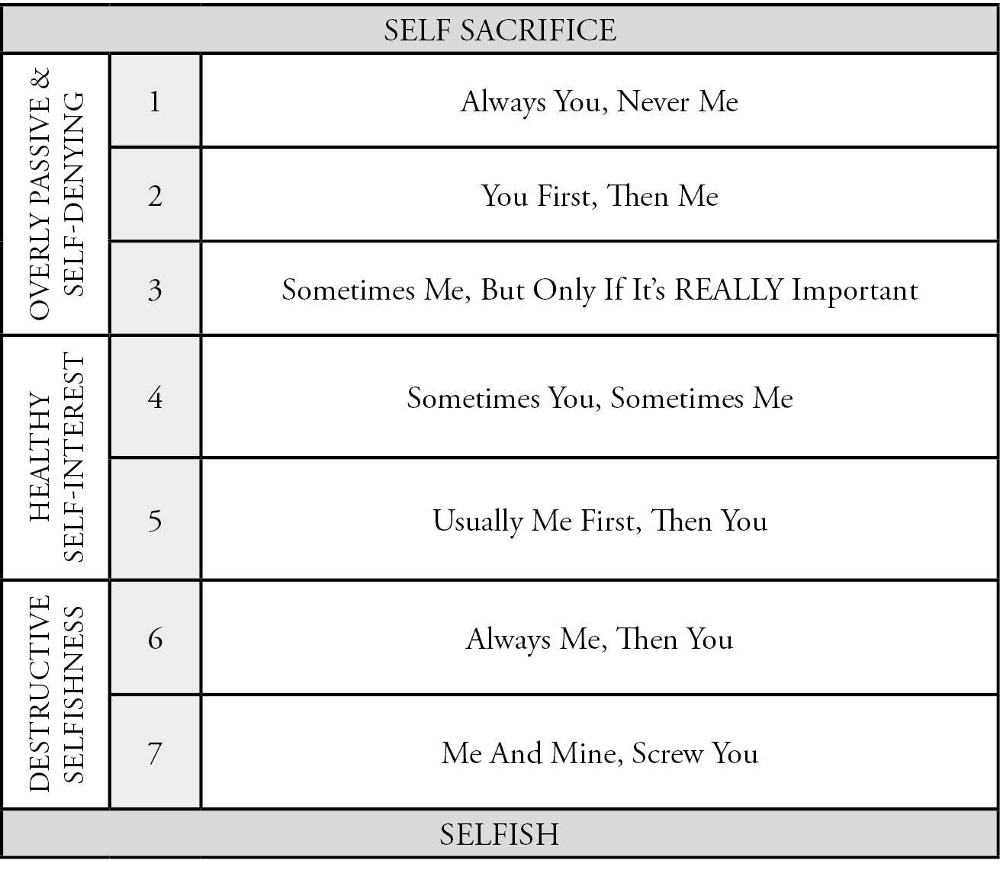

On the left side of this spectrum, we have no right to our self-interest. We always put others and their needs and wants first. We feel horrible and guilty if we do otherwise. This can be called self-sacrificing or self-denying.
The complete opposite end of this spectrum is the disconnected, self-absorbed person who mercilessly crushes all who oppose his or her will. They’ll get what they want or there will be hell to pay.
The middle of the spectrum is known as healthy self-interest. This is where you can take care of yourself when you need to. You’re able to put your needs first at times, and you can enjoy some time off without feeling guilty for not doing enough. You can say no, even if someone’s upset about it. You can say what you want and need, and you can finally start enjoying yourself more.
Where do you tend to live? What number on the spectrum, between one and seven? Most nice people hover around two–You First, Then Me. They meet their needs only after they’re sure everyone else is covered. They ask for what they want only if they think others will want the same thing.
Under stress they drop down to a 1 (Always You, Never Me) and completely forgo their own needs, wants, and desires. They’ll tell themselves something like this: How on earth could I ask for what I need when it’s obvious he’s struggling so much. Now is not the time.
Sometimes, they’ll move up to level 3 (Sometimes Me, But Only If It’s REALLY Important), but only if it’s a big deal. On rare occasion, an event or experience that is important to them, they’ll advocate for themselves to go to it. Or, if they’re reaching the threshold of how much they can give, they’ll ask for more support. More often than not, however, they won’t ask directly. Instead, some sort of physical condition, such as migraines, back pain, or neck pain, will become so intense that they force the person to slow down and take care of themselves.
Healthy self-interest exists in the range between level 4 and 5. That may surprise you. Perhaps you see four as a healthy place to be: Sometimes You, Sometimes Me. I mean, it seems fair after all. But level 5, Usually Me First, Then You, that just sounds terrible, doesn’t it? Way too selfish, bad, and wrong!
Not necessarily. Because being able to identify what you want and prioritize meeting your needs in a skillful way allows you to be more loving, generous, and giving than ever before. The “Usually Me First” means you are frequently looking inwards to discover what you need and want, first. You are considering that before you factor in others’ needs and wants. This prevents the old nice-person habit of always putting others first and allows you to get clear on what will help you thrive.
Remember the Project: ULTRA example from the last chapter where Candace and I were figuring out our workout schedules?
It began with me getting clear: I want to work out four times per week, no matter what. It started with a strong, healthy impulse of self-interest. Me first. I need to do this. I want this. I’m going to make this happen. Then, from that place, I began to explore how to make it work for our entire family. And that’s the key difference between healthy self-interest and callous selfishness: I consider how to meet my needs in the most skillful way possible that serves the greater good.
As I did this, Candace became freer to claim what she wanted and needed. As I put myself first and was able to meet my needs, I became able to freely and happily give generously without resentment. So, when she says she can work out just three days a week, instead of saying, “Great! Less work for me,” I say, “Really? How many days would you really want to work out?” She gets more of what she wants and so do I.
This is the real secret of being more selfish. It’s moving up the spectrum to the levels of healthy self-interest so you can most skillfully meet your needs. As you do so, you become a much happier, more loving and giving person.
One important note–if you’re a parent, especially of small children, self-sacrifice seems to be the name of the game. In many situations with my boys I’m operating at levels two and three—often putting them first—and that feels good for me to do right now. That means I make them meals and snacks, tell stories in the bathroom during dinner time, and wipe poopy butts whether I want to or not. I do this because I deeply love them and want to create a secure sense of attachment and healthy self-esteem. I know that the more they feel held, respected, and loved at this young age, the more it will serve them for a lifetime.
Parenting is the long-game. I see it as a spiritual practice to continually surrender to what is most needed in the moment and set aside many of my inner child’s personal preferences. This is what makes me the adult in that situation.
Yet, the resentment formula still applies (you’ll discover what that is in just a moment). So here and there I say no to things I don’t want to do and offer alternatives, so I feel like I still have some autonomy. I also take time for myself to process and release any resentment that forms from giving in this way to prevent it from building up and causing problems. I take time for myself every morning between 3:00 – 6:00 a.m. for my spiritual and physical practices to keep me happy, energized, grateful, and healthy. So, while I give a lot to my boys, I’m sure to give a lot to myself too.